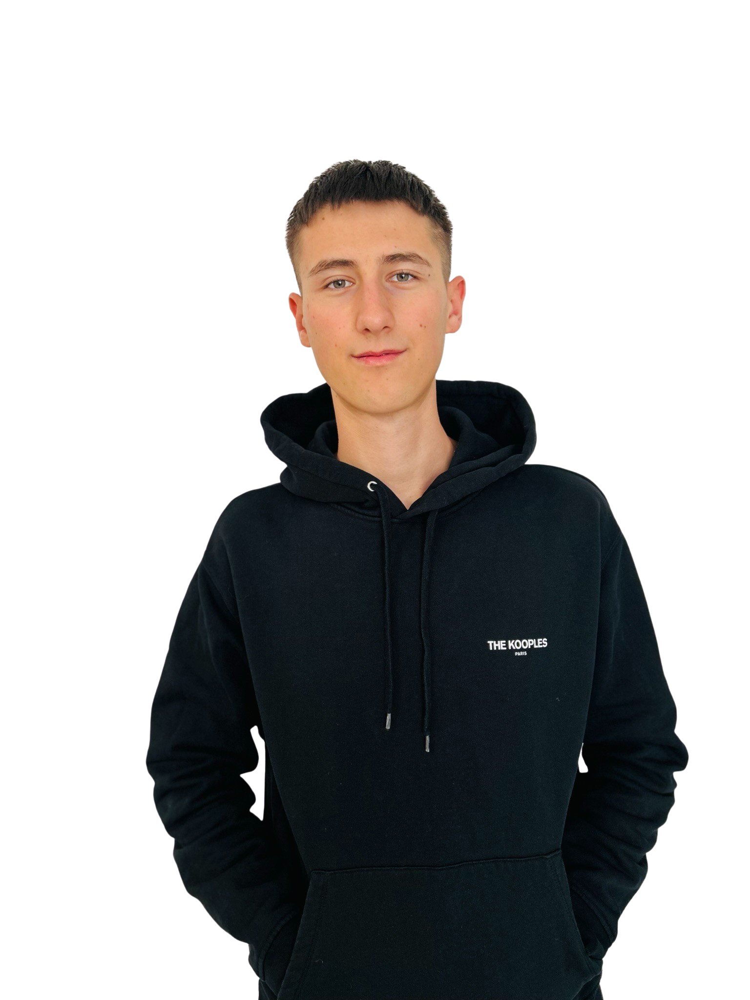

Frontend - Web - Developer -
Varga Albert
Frontend Web Developer
Main Tech Stack


about me
Hello, Varga Albert vagyok, Frontend Developer.
Jelenleg 25 éves vagy, tanulmányaim az IT belul végeztem, Bár idág a családi
vállalkozásunkban
tevékenykedtem 2023 tól, elhatároztam hogy
PortfólióK
Jelenleg még csak négy egyszerű portfolió oldalam van, a JS Recat oldalak még tanulás/ Fejlesztés alatt vannak. de a stílus lapok eléggé kidogozottak az eddigi projekteken.

Burgers Food
Hamburgeres weboldala, web shopja. single page website frontend része. Az oldal felépítésé szemantikus html elemekkel, mobile first design. Az oldal elemeinek elrendezése Flex-Boxal történt A responsive dizájnhoz több töréspont tartozik. A stílus lap scss el íródott. Az oldal tartalmaz űrlapot is. Az oldal navigációja responsive hamburger menüvel történik.
- HTML
- CSS, SCSS
- Flexbox

Koksz Károly
Koksz Károly Személyi edző Weboldala frontend része. Az oldal felépítésé szemantikus html elemekkel, mobile first design. Az oldal elemeinek elrendezésében, Flex-Boksz mellet a Grid Nagyobb hangsúlyt kapott. A CSS SCSS íródott. a sáját css stiluslap mellet megjelenik a BOOT STRAP könyvtár. A hamburger menü és a carousel BOOT STRAP elemek. Az oldal tartalmaz űrlapot is. És egy kevés animációt.
- HTML
- CSS, SCSS
- JS
- BOOT STRAP
- Grid, Flexbox
Memory Game
Memoria játék, funcionális programozásal.
- HTML
- CSS
- JS
- Grid